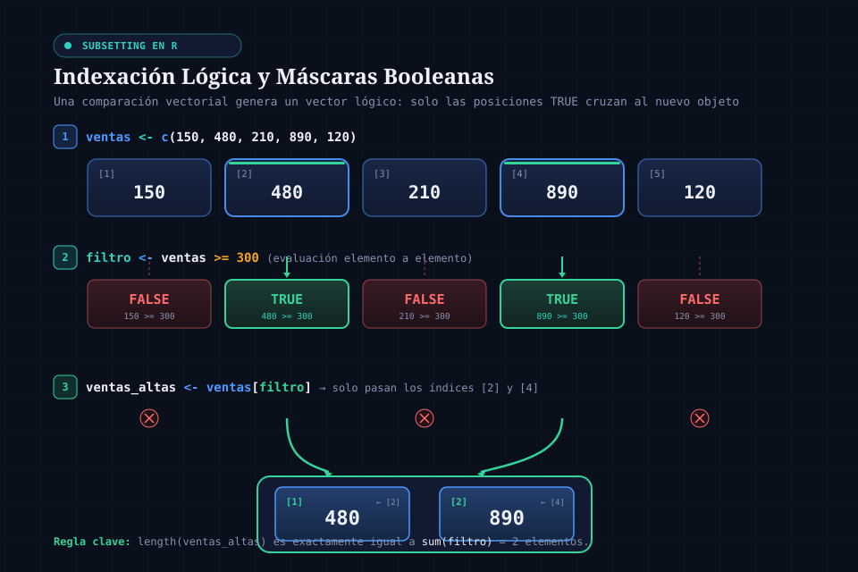
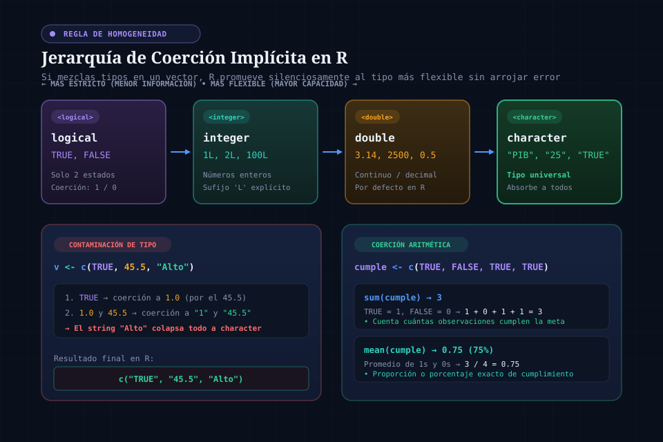
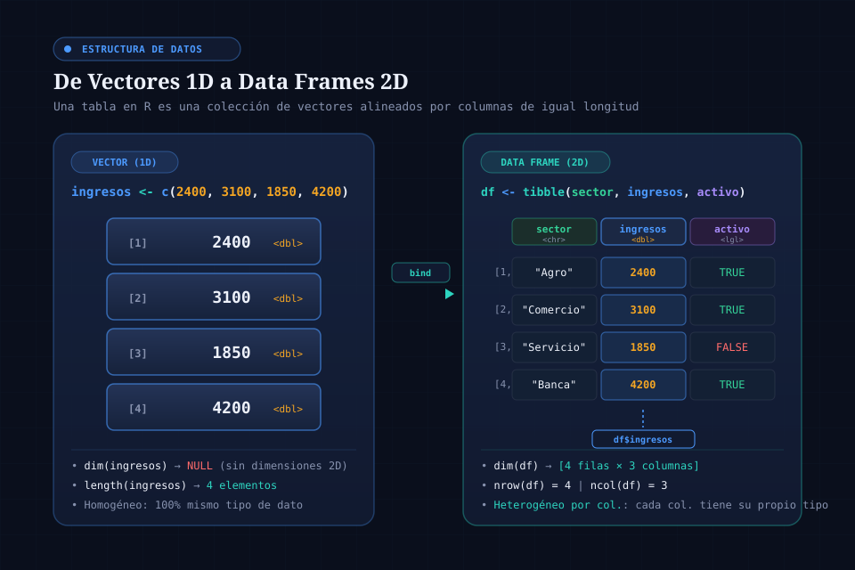

Control 01 · Semanas 1 a 3 · Guía de lectura profunda
Guía de lectura profunda y análisis para el Control 01
Para leer con calma, no para cronometrar: los conceptos de las tres primeras semanas con analogías económicas, código de R que puedes ejecutar y 36 preguntas para razonar por escrito antes de ver el análisis.
EVALÚAControl 01Sin IA
Pregunta orientadora¿Puedo explicar, para cualquier resultado que produzca con R, cómo sé que es correcto?
Gráfico C1 Edificio A deja la mayor utilidad; Polideportivo, la menorUtilidad por punto de venta en 6 días (ingreso menos costo), USD
Fuente: datos/ventas_campus.csv; sumas por punto calculadas con R.
Pasa el cursor, toca el gráfico o usa ← → para leer cada dato con la lupa.
Momento 1 de 4
Empezar
Cómo usar esta guía
Este documento no es un simulacro: es material para leer con calma antes o después de clase, acompañando tu propia sesión de RStudio. Cada subtema conecta un concepto con una analogía económica y, donde ayuda, un bloque de R que ahora puedes ejecutar en la página. Las reflexiones y las 36 preguntas piden que escribas tu razonamiento antes de ver el análisis.
Durante la semanaLee la unidad que corresponde a la clase: 1 para la semana 1, 2 para la semana 2, 3 para la semana 3.
Un par de días antesResponde las 36 preguntas escribiendo de verdad antes de abrir cada análisis.
El día anteriorHaz el repaso con simulacro: práctica con R real y un simulacro cronometrado de 45 minutos.
El mismo díaEl mapa y cierre como último vistazo: ubica cada tema en su semana y su porqué.
Pregunta
→
Exploración
→
Implementación
→
Resultado
→
Interpretación
→
Verificación
Temario y reglas
El Control 01 evalúa las semanas 1 a 3: R y RStudio, algoritmos, objetos y vectores, matrices y data frames, paquetes, importación con read_csv() y visualizaciones iniciales. Es una actividad Sin IA. Lecturas: R4DS cap. 2, cap. 7 (§7.2) y cap. 1.
Autoevaluación rápida
Ocho preguntas para saber por dónde empezar. Si fallas una, lee la unidad que indica la explicación.
¿Cuál es el orden correcto para resolver un problema con datos?
Empezar por el código puede producir un cálculo perfecto para una pregunta que nadie necesitaba. Unidad 1.1.
presupuesto <- 2000, gasto <- presupuesto * 0.15 y luego presupuesto <- 3000. ¿Cuánto vale gasto?
R no recalcula solo: gasto se calculó cuando el presupuesto era 2000. Unidad 1.3.
¿Qué devuelve round(14.678, digits = 2)?
digits es el argumento que fija los decimales. Unidad 1.5.
Con x <- c(8, 14, 11, 7), ¿qué devuelve x[x > 10]?
La condición crea una máscara lógica y solo pasan las posiciones TRUE. Unidad 2.1.
¿Cuál responde “qué proporción de todas las personas asistió”?
La tasa global pondera cada jornada por su tamaño; el promedio de tasas no. Unidad 2.4.
Una columna de montos aparece como <chr> tras read_csv(). ¿Qué haces primero?
Un tipo inesperado es una alarma, no un detalle. Unidad 2.6.
¿Qué geom muestra la distribución del ingreso diario?
Una variable numérica se reparte en intervalos (binwidth). Unidad 3.3.
Quieres puntos coloreados por punto de venta y una sola recta negra. ¿Dónde va color = punto?
El mapeo global se hereda a todas las capas; el local, solo a su geom. Unidad 3.2.
Momento 2 de 4
Lectura profunda
R como herramienta para pensar
Unidad 1 · Semana 1 · “¿Qué puedo hacer con R y cómo le doy instrucciones?”
En palabras simples
Antes de cocinar, un chef lee la orden del cliente: qué pidió, con qué ingredientes cuenta y cómo sabrá que el plato salió bien. Con R es igual: la pregunta y los datos van primero; el código es la receta, y la verificación es probar el plato antes de servirlo.
Antes de escribir una sola línea de código, el Control 01 evalúa algo más básico: si entiendes en qué orden se resuelve un problema con datos, y si distingues una descripción de una predicción. Esta primera unidad cubre exactamente ese terreno -- el de la lectura previa del Capítulo 2 de R4DS -- antes de tocar RStudio.
1.1 · El orden importa más que el código
Un analista puede escribir un script que corre sin errores y aun así responder la pregunta equivocada. El programa del curso fija un orden deliberado: plantear la pregunta, identificar los datos disponibles para responderla, escribir las instrucciones que los transforman, verificar el resultado y comunicar una decisión. Empezar directamente por el código es tentador -- R da una sensación inmediata de progreso -- pero el riesgo es producir un cálculo técnicamente correcto para una pregunta que nadie necesitaba responder, o peor: para la pregunta equivocada sin que nadie lo note hasta que la decisión ya se tomó.
Esta secuencia -- pregunta → exploración → implementación → resultado → interpretación → verificación -- es la columna vertebral pedagógica de todo el curso, no solo de esta unidad. Cada laboratorio semanal y cada pregunta de este Control 01 la da por sentada.
Dato del programa: el ciclo completo de la ciencia de datos según R4DS es importar → ordenar → transformar → visualizar → modelar → comunicar. El Control 01 solo evalúa las primeras cuatro etapas -- modelar y comunicar en profundidad llegan en semanas posteriores del curso.
1.2 · R y RStudio no son lo mismo
Es común escuchar “voy a abrir R” cuando en realidad se abre RStudio. La distinción no es cosmética: R es el lenguaje y el motor que efectivamente interpreta y ejecuta tus instrucciones -- podría usarse sin RStudio, desde una terminal. RStudio es un entorno de desarrollo (IDE) que hace ese trabajo cómodo: un editor de scripts, una consola, un panel de objetos creados (Environment) y un panel de ayuda, todos alrededor del mismo motor de R. Instalar RStudio sin R no ejecuta nada; instalar solo R funciona, pero sin las comodidades del entorno.
Console
Ejecuta una instrucción a la vez, de inmediato. Ideal para probar algo puntual -- pero nada de lo que escribes ahí queda guardado para repetirlo después.
20 + 5
# se ejecuta al instante, pero no queda registrado
Script
Un archivo de instrucciones que se guarda, se revisa y se vuelve a ejecutar completo cuando lo necesites -- la unidad real de trabajo reproducible de este curso.
Entre Console y Script, la pregunta de la Guía de repaso lo resume bien: si necesitas repetir el análisis una semana después -- por ejemplo, porque llegaron datos nuevos del mismo mes -- el Script es la única opción viable; la Console no organiza por sí sola un procedimiento reproducible.
1.3 · Objetos y el operador de asignación <-
Para guardar un valor en R se usa <-, que conviene leer mentalmente como “el nombre del objeto obtiene el valor”. Un objeto creado así no se imprime automáticamente -- para verlo, escribes su nombre en una línea aparte.
Los nombres de objeto deben empezar con una letra y contener solo letras, números, guiones bajos y puntos -- el curso exige además snake_case (ingreso_mensual, no ingresoMensual ni Ingreso.Mensual). 2nombre no es válido porque empieza con un dígito, y venta-total no crea un objeto: R lo interpreta como una resta entre dos objetos que probablemente no existen (venta menos total).
El error más común de quien empieza: R distingue mayúsculas de minúsculas. Si creaste precio y luego escribes Precio * 3, obtienes un error de objeto no encontrado -- no porque el cálculo esté mal, sino porque Precio (con mayúscula) nunca se creó. Y si reasignas un objeto (por ejemplo presupuesto <- 3000) pero no vuelves a ejecutar la línea que depende de él (gasto <- presupuesto * 0.15), ese segundo objeto no se actualiza solo: R no es una hoja de cálculo con fórmulas vivas, cada línea se ejecuta una sola vez, cuando la corres.
1.4 · Comentarios: el por qué, no el qué
Cualquier texto después de # es ignorado por R -- es una nota para humanos. La regla de oro, tomada directamente del Capítulo 2 de R4DS y obligatoria en todo el curso, es que los comentarios deben explicar el porqué de una decisión, no el qué ni el cómo (eso ya se lee en el código mismo, aunque sea tedioso).
# se usa 1.06 y no la tasa oficial de 1.08 porque el último trimestre
# ya mostraba una desaceleración que la fuente oficial todavía no reflejaba
proyeccion_ingresos <- ingreso_actual * 1.06
Un comentario como # multiplica por 1.06 es redundante -- se lee directamente en el código. Un comentario que explica por qué 1.06 y no la tasa oficial es información que ningún lector podría reconstruir mirando solo el código.
1.5 · Funciones y argumentos
R llama a sus funciones con la forma nombre_funcion(argumento1 = valor1, argumento2 = valor2). Tomemos round(): la función es round, el primer argumento es el número a redondear, y digits es un segundo argumento que controla cuántos decimales conservar.
Cambiar únicamente el valor de digits no cambia qué función se ejecuta -- cambia cuánta precisión pide el argumento a esa misma función. Es la misma lógica detrás de mean(), seq() o, más adelante, read_csv(): identificar la función, identificar qué papel cumple cada argumento.
1.6 · Vectores: la semilla de una columna
c() combina varios valores en un solo objeto -- un vector. Las operaciones aritméticas sobre un vector se aplican a cada elemento por separado (operación vectorizada), sin necesidad de un ciclo:
Este vector de tres ingresos mensuales es, conceptualmente, el primer paso hacia una columna de una base de datos: en la Semana 2 vas a ver que un data frame no es más que varios vectores de la misma longitud puestos uno junto al otro, cada uno con su propio nombre y tipo.
Reflexión 1.1 · Correlación no es causalidad
IA permitida
Un colega mira un gráfico ascendente de gasto en publicidad contra ventas mensuales y concluye: “más publicidad causa más ventas”. Antes de revelar: ¿qué salto lógico está cometiendo? ¿Cómo reformularías la misma observación de forma defendible, sin negar que el patrón existe?
Análisis
Una relación ascendente entre dos variables no demuestra causalidad: podrían existir otros factores explicando ambas a la vez (por ejemplo, una temporada alta que empuja tanto el presupuesto de marketing como las ventas por razones independientes de la publicidad misma). La formulación defendible es puramente descriptiva de los datos que sí tienes: “en estos registros, más publicidad se asocia con más ventas” -- una afirmación sobre asociación observada, no sobre un mecanismo causal comprobado. Establecer causalidad requeriría un diseño distinto (por ejemplo, comparar períodos o regiones donde la publicidad cambió mientras otros factores se mantuvieron razonablemente constantes), no solo un gráfico de dispersión.
Cómo representa R los datos de un economista
Unidad 2 · Semana 2 · “¿Cómo representa R los datos con los que trabaja un economista?”
En palabras simples
Un vector es una columna de una hoja de ventas; un data frame es la hoja completa, donde cada fila es una jornada y cada columna una variable. Importar un CSV es recibir esa hoja de otra oficina: primero revisas que llegó completa y con los formatos correctos, después sacas cuentas.
La Semana 2 conecta un vector suelto con una base de datos real: primero indexando y filtrando vectores, después empaquetándolos en data frames, y finalmente importando un archivo externo con read_csv() -- la lectura asignada es la sección 7.2 del Capítulo 7 de R4DS.

Figura 1 · Indexación y filtrado lógico: La comparación vectorial genera un vector lógico paralelo (máscara booleana); solo las posiciones TRUE cruzan al nuevo vector resultante.
2.1 · Indexar un vector: tres criterios de selección
Con x <- c(8, 14, 11, 7), R ofrece al menos tres formas distintas de extraer elementos, y confundirlas es un error frecuente al empezar:
Por posición
Un vector de posiciones exactas entre corchetes selecciona esos elementos, en ese orden.
precios <- c(10, 15, 20, 35)
precios[c(1, 3)]
[1] 10 20
Por exclusión
Un índice negativo excluye esa posición y conserva todas las demás.
precios[-2]
[1] 10 20 35
Por condición lógica
Un vector lógico de la misma longitud selecciona solo las posiciones donde ese vector es TRUE -- la base de todo filtro futuro con dplyr.
precios[precios > 15]
[1] 20 35
2.2 · Vectorización y el riesgo del reciclaje
Cuando dos vectores de la misma longitud se combinan, R opera posición a posición:
Vectorización, misma longitud
precios <- c(10, 15, 20)
precios * c(2, 3, 4)
[1] 20 45 80
El resultado no es un solo número porque cada posición se multiplica de forma independiente -- para reducirlo a un único total habría que envolverlo en sum(). El riesgo aparece cuando las longitudes no coinciden: R no siempre lanza un error, a veces recicla (repite) el vector más corto para completar la operación. Si las longitudes no son múltiplo exacto una de la otra, R muestra una advertencia -- pero incluso cuando no la muestra, conviene comprobar length() de ambos vectores antes de confiar en el resultado, porque un reciclaje silencioso y no intencionado es una fuente clásica de errores difíciles de detectar.
2.3 · Por qué un vector no mezcla tipos sin perder información

Figura 2 · Jerarquía de coerción atómica: Al combinar tipos en un vector atómico, R promueve silenciosamente hacia el tipo más flexible (logical → integer → double → character) sin emitir error.
Un vector atómico, un solo tipo
typeof(c(1, "dos", 3))
[1] "character"
Un vector atómico solo puede tener un tipo de dato: si mezclas números y texto, R convierte silenciosamente los números a texto para que todo el vector sea consistente -- por eso 1 deja de ser numérico y pasa a ser el carácter "1". Esta limitación es exactamente la razón por la que un economista no guarda una base completa en un solo vector: necesita una estructura que conserve columnas numéricas y de texto por separado, cada una con su propio tipo. Esa estructura es el data frame -- el tema de la siguiente sección.
2.4 · Vectores lógicos: sum(), any(), all()
Un vector de TRUE/FALSE se comporta numéricamente cuando se envuelve en sum() (TRUE cuenta como 1): eso permite contar cuántas observaciones cumplen una condición sin escribir un ciclo.
sum() responde “¿cuántos cumplen?”, any() responde “¿existe al menos uno que cumple?” y all() responde “¿cumplen absolutamente todos?” -- tres preguntas con respuestas independientes. Para combinar dos condiciones a la vez (por ejemplo, jornadas con inscritos >= 50 & asistentes < 25), el operador & exige que ambas comparaciones sean verdaderas en la misma posición.
La distinción más importante de esta unidad: una tasa global (sum(asistentes) / sum(inscritos)) y un promedio simple de tasas diarias (mean(asistentes / inscritos)) casi nunca coinciden. La tasa global pondera naturalmente cada jornada según su tamaño real; el promedio de tasas le da el mismo peso a una jornada de 10 inscritos que a una de 500. Si la pregunta es “qué proporción del total de personas asistió”, la respuesta correcta es la tasa global -- no el promedio de proporciones diarias. Esta misma confusión reaparece, con otros nombres, en el Ejercicio 03 de la Práctica.
2.5 · De vectores a tablas: data frames y auditoría inicial

Figura 3 · De vectores 1D a tablas 2D: Un data frame rectangular organiza múltiples vectores atómicos de igual longitud en columnas nombradas, permitiendo heterogeneidad entre variables.
Un data frame (o su versión moderna, el tibble) es una colección rectangular de variables (columnas) y observaciones (filas): cada variable es una cantidad medible, cada valor es su estado en una medición concreta, y una observación es el conjunto de valores medidos en condiciones comparables -- por ejemplo, una fila por hogar encuestado, o una fila por jornada de ventas en un punto de venta. A diferencia de una matriz (que exige un solo tipo de dato en toda la estructura, igual que un vector), un data frame conserva cada columna con su propio tipo: texto en una, números en otra.
Antes de calcular cualquier cosa sobre una base importada, cuatro funciones responden preguntas distintas -- ninguna sustituye a las otras, y ver la tabla en el panel Environment de RStudio no es lo mismo que haberla inspeccionado:
Los ejemplos de esta sección usan ventas: seis jornadas en cada uno de cuatro puntos de venta de un campus (el mismo caso del repaso). Este bloque la prepara y los siguientes lo ejecutan antes, solos:
Las primeras filas reales -- permite leer un registro completo e interpretarlo con sentido económico.
head(ventas, 3)
str() / glimpse()
El tipo de cada columna y un vistazo a sus primeros valores -- la herramienta que revela si una columna numérica llegó como texto.
glimpse(ventas)
Si un objeto tiene dim(datos) igual a c(24, 6) y cada fila representa una jornada de ventas, la lectura correcta es: 24 observaciones (jornadas) y 6 variables -- no al revés.
2.6 · Importar con read_csv() y comprobar antes de creer
El archivo CSV en disco y el objeto que resulta de importarlo son dos cosas distintas: el archivo no cambia, y <- guarda la tabla interpretada en un objeto de tu sesión de R.
Rows: 24 Columns: 6
── Column specification ────────────────────────────────────────────────────────
Delimiter: ","
chr (1): punto
dbl (5): dia, visitantes, compras, ingreso_usd, costo_usd
ℹ Use `spec()` to retrieve the full column specification for this data.
ℹ Specify the column types or set `show_col_types = FALSE` to quiet this message.
readr adivina el tipo de cada columna mirando una muestra de valores -- por eso, si una columna que debería ser numérica llega como character, es una señal de alerta, no un detalle menor: conviene suspender cualquier suma, promedio o gráfico sobre esa columna y revisar el CSV en busca de símbolos de moneda, separadores decimales distintos, o texto donde debería haber solo números.
Dos comprobaciones evitan errores comunes de importación:
Si el archivo aparece con una sola columna en vez de las esperadas, casi siempre es un problema de delimitador (por ejemplo, un CSV separado por punto y coma leído con la función equivocada) o el archivo incorrecto -- no un error de R.
Una ruta relativa como "datos/ventas_campus.csv" se interpreta desde la carpeta del proyecto de RStudio y viaja con él a otra computadora; una ruta absoluta que contiene tu nombre de usuario deja de funcionar en cualquier otra máquina.
El argumento na declara explícitamente qué texto debe leerse como valor faltante (por ejemplo, na = c("N/A", "")) -- sin esa declaración, un “N/A” escrito como texto literal puede colarse como si fuera un dato válido.
Reflexión 2.1 · Tasa global contra promedio de tasas
IA permitida
Cuatro sucursales de una cadena reportan, cada una, su propia tasa de conversión diaria (compras entre visitantes) durante seis días. Antes de revelar: ¿por qué mean() de esas 24 tasas diarias puede dar un número distinto a dividir el total de compras entre el total de visitantes de las 24 jornadas? ¿Cuál usarías si te preguntan “qué porcentaje de todas las personas que entraron, compraron”?
Análisis
Cada jornada tiene un tamaño distinto de tráfico. mean() de las 24 tasas diarias le da el mismo peso a una jornada de 40 visitantes que a una de 400 -- una jornada pequeña con una tasa inusualmente alta puede inflar el promedio aunque haya aportado pocas compras reales. La tasa global (sum(compras) / sum(visitantes)) pondera naturalmente cada jornada según su tamaño, porque simplemente suma todo antes de dividir. Para responder “qué porcentaje de todas las personas que entraron, compraron” -- una pregunta sobre el total de personas, no sobre el día promedio -- la tasa global es la que corresponde.
Qué puedo descubrir de mis datos antes de calcular
Unidad 3 · Semana 3 · “¿Qué puedo descubrir de mis datos antes de calcular?”
En palabras simples
Un gráfico es el tablero del gerente: en un vistazo muestra dónde mirar. Pero el tablero no toma la decisión: sugiere preguntas que después se comprueban con números.
“El gráfico simple ha traído más información a la mente del analista de datos que cualquier otro dispositivo.”John Tukey, citado en R4DS, Capítulo 1
La Semana 3 introduce ggplot2 -- lectura asignada: el Capítulo 1 de R4DS. El paquete implementa la gramática de gráficos: un mismo sistema de piezas combinables sirve para construir cualquier visualización, sin aprender un comando distinto por cada tipo de gráfico.
3.1 · La gramática de un gráfico: data + aes() + geom
Un gráfico de ggplot2 se construye por capas, empezando por un lienzo vacío:
Solo datos, sin mapeo -- lienzo vacio
Desde aquí los ejemplos cargan ggplot2 y usan la misma tabla ventas:
library(ggplot2)
ggplot(data = ventas)
El argumento mapping = aes(...) asigna variables a propiedades visuales (posición en los ejes, color, forma) -- pero incluso con aes(), todavía no hay marcas dibujadas:
Falta una geom: el objeto geométrico que efectivamente representa los datos (geom_point(), geom_bar(), geom_histogram()...). ggplot(datos, aes(...)) por sí solo nunca dibuja observaciones -- solo declara el sistema de coordenadas.
Colocar aes(color = punto_venta) dentro de ggplot() lo convierte en un mapeo global: se hereda por todas las capas siguientes, incluida una curva de tendencia -- lo que produce una recta por cada categoría. Si en cambio el objetivo es puntos coloreados por categoría pero una única recta general para todo el conjunto, el color debe ir solo dentro de geom_point() (mapeo local), dejando geom_smooth() sin ese mapeo heredado:
Color local + una sola recta global
ggplot(ventas, aes(x = visitantes, y = ingreso_usd)) +
geom_point(aes(color = punto)) +
geom_smooth(method = "lm", se = FALSE, color = "black")
Fuera de aes(), color = "black" fija un color fijo para todo el gráfico; dentro de aes(), color = punto asigna un color distinto según el valor de una variable y añade automáticamente una leyenda. Confundir ambos es una de las fuentes más comunes de un gráfico que “no sale como se esperaba”.
3.3 · Una variable a la vez: categórica contra numérica
Una variable categórica toma uno de un conjunto pequeño de valores (un punto de venta, un sector económico); una variable numérica admite un rango amplio donde sumar y promediar tiene sentido (un ingreso diario). Cada tipo pide una geom distinta:
geom_bar()
Cuenta registros por categoría: un eje x categórico, la altura es la frecuencia. Responde "cuántas jornadas tuvo cada punto".
ggplot(ventas, aes(x = punto)) +
geom_bar()
geom_histogram() / geom_freqpoly()
Dividen el eje x en intervalos de ancho binwidth y cuentan cuántas observaciones caen en cada uno -- muestran la forma de la distribución de un monto.
binwidth = 50 fija el ancho de cada intervalo en 50 unidades del eje x -- cambiarlo (de 25 a 50, por ejemplo) altera cuántas observaciones caen en cada barra y, por lo tanto, la lectura visual de la forma de la distribución, aunque los datos originales no cambien en absoluto. Un binwidth muy angosto genera ruido; uno muy ancho oculta la forma real.
El eje horizontal de un histograma o polígono de frecuencias es un monto (por ejemplo, ingreso en dólares), no un momento en el tiempo. Unir los puntos de un polígono de frecuencias no lo convierte en una serie temporal: cada punto representa cuántas jornadas cayeron en un intervalo de ingreso, no la evolución de ese ingreso a lo largo de los días.
3.4 · Relaciones entre variables: dispersión y facetas
Para dos variables numéricas, el diagrama de dispersión (geom_point()) es la elección más directa. Cuando conviene desagregar por una tercera variable categórica sin saturar el gráfico de colores y formas simultáneos, facet_wrap(~variable) reparte los datos en subgráficos, uno por categoría:
Sumar demasiadas propiedades visuales a la vez (color y forma y tamaño en el mismo gráfico) vuelve la lectura difícil -- las facetas suelen comunicar mejor cuando la variable adicional es categórica.
3.5 · De la visualización a la decisión: lo que un gráfico no dice
Un gráfico de barras que muestra seis registros por cada uno de cuatro puntos de venta solo confirma que se observó el mismo número de jornadas en cada punto -- no que los cuatro tengan el mismo ingreso, la misma tasa de compra o el mismo desempeño. Del mismo modo, una relación positiva entre visitantes e ingreso en un diagrama de dispersión no mide directamente la conversión (compras entre visitantes): para eso se necesitan ambas variables explícitamente, con un denominador claro, además de contexto sobre el período, los costos y la composición de esas visitas.
Esta unidad cierra el círculo que abrió la Unidad 1: un patrón visual sugiere dónde investigar, pero nunca sustituye la verificación explícita con los números exactos detrás del gráfico.
Reflexión 3.1 · Elegir el gráfico correcto
IA permitida
Tienes una base con seis jornadas por cada uno de cuatro puntos de venta de un campus. Quieres responder tres preguntas distintas: (a) ¿cuántas jornadas se registraron por punto?, (b) ¿cómo se relacionan los visitantes con el ingreso diario?, (c) ¿cómo se distribuye el monto de ingreso entre todas las jornadas? Antes de revelar: ¿qué geom usarías para cada una y por qué?
Análisis
(a) geom_bar() con x = punto: cuenta registros por categoría, y la pregunta es puramente de conteo. (b) geom_point() con x = visitantes, y = ingreso_usd: son dos variables numéricas y la pregunta es sobre su relación conjunta, observación por observación. (c) geom_histogram() (o geom_freqpoly()) con x = ingreso_usd: la pregunta es sobre la forma de la distribución de un solo monto numérico, no sobre conteos por categoría ni sobre la relación entre dos variables. Elegir la geom equivocada -- por ejemplo, un histograma para la pregunta (a) -- no produce un error de R, pero sí un gráfico que no responde la pregunta planteada.
¿Cómo sabemos que este resultado es correcto?
A lo largo de esta lectura, verificar significó cosas distintas según el momento: contrastar presupuesto - gasto con un cálculo hecho a mano (1.3), comprobar length() antes de confiar en una operación vectorizada (2.2), revisar str()/glimpse() antes de sumar una columna que podría haberse importado como texto (2.5–2.6), y distinguir qué pregunta responde exactamente cada geom antes de interpretar un gráfico (3.5). Estudiar esta guía sin hacerte esta pregunta en cada subtema es memorizar sintaxis, no aprender a razonar con R.
Momento 3 de 4
36 preguntas
Preguntas 01 · Pensar antes de programar
Antes de que R entre en escena: qué es un algoritmo, en qué orden se resuelve un problema de datos, y por qué “el código corrió sin errores” nunca es evidencia suficiente. Estas cinco preguntas son puramente conceptuales -- no necesitas RStudio abierto para analizarlas.
Preg. 01 · R contra RStudio
IA permitida
Una persona dice: “R es lo mismo que RStudio”. Explica qué hace cada uno y qué componente interpreta tus instrucciones.
Análisis completo
R es el lenguaje y el sistema que interpreta y ejecuta instrucciones; RStudio es el entorno de trabajo (IDE) que facilita editar scripts, usar la consola y ver los objetos creados. Instalar RStudio por sí solo no reemplaza a R -- es R quien efectivamente interpreta y ejecuta cada instrucción.
Preg. 02 · Definir algoritmo
IA permitida
Define algoritmo mediante una tarea cotidiana con entradas, pasos y resultado. ¿Cómo comprobarías si las instrucciones son suficientemente precisas?
Análisis completo
Un algoritmo es una secuencia finita de instrucciones precisas para obtener un resultado a partir de unas entradas. Ejemplo cotidiano: recibir un precio y un monto en efectivo, comprobar que el efectivo alcanza, y devolver el vuelto (efectivo menos precio). Se comprueba probándolo con casos normales y casos límite (efectivo exacto, efectivo insuficiente), y verificando que otra persona pueda seguir los pasos sin tener que adivinar nada.
Preg. 03 · El orden del análisis
IA permitida
Ordena y explica: plantear pregunta, identificar datos, escribir instrucciones, verificar resultado, comunicar decisión. ¿Qué riesgo hay si empiezas por el código?
Análisis completo
El orden correcto es: plantear la pregunta → identificar los datos disponibles → escribir las instrucciones → verificar el resultado → comunicar una decisión. Empezar directamente por el código arriesga producir un cálculo técnicamente correcto para una pregunta que en realidad nadie necesitaba responder -- el script puede correr sin errores y aun así no servir para nada útil.
Preg. 04 · Describir contra predecir
IA permitida
Contrasta una descripción de datos observados con una predicción de ventas futuras. ¿Qué pregunta responde cada una y cuál requiere supuestos adicionales?
Análisis completo
La descripción responde “qué ocurrió” en los datos que ya observaste (por ejemplo, cuánto vendiste el mes pasado). La predicción estima qué podría ocurrir fuera de esos datos -- en un período futuro -- y por eso requiere supuestos explícitos, un método definido y una forma de comprobar qué tan bien funcionó ese método después de los hechos. Describir es un resumen; predecir es una apuesta justificada.
Preg. 05 · El salto de correlación a causalidad
IA permitida
En un Script que corre sin errores se afirma “más publicidad causa más ventas” tras observar un gráfico ascendente. Señala el salto lógico y una formulación defendible.
Análisis completo
Una relación ascendente entre dos variables no demuestra causalidad -- podrían existir otros factores de fondo influyendo en ambas a la vez. Una formulación defendible, que no se excede de lo que los datos realmente muestran, sería: “en estos registros, más publicidad se asocia con más ventas” -- una afirmación sobre asociación observada, no sobre un mecanismo causal comprobado.
Preguntas 02 · R y las instrucciones
Consola contra Script, objetos y asignación, nombres válidos, anatomía de una llamada a función, paquetes. La base absoluta de “hablarle a R” -- y el error más común de quien empieza: creer que algo se actualiza solo.
Preg. 06 · Console contra Script
IA permitida
Console y Script ejecutan 20 + 5. ¿Cuál permite repetir mejor el análisis una semana después? ¿Por qué?
Análisis completo
El Script permite repetir mejor el análisis una semana después: conserva las instrucciones guardadas y organiza el procedimiento completo para volver a ejecutarlo. La Console es útil para pruebas inmediatas y puntuales, pero no organiza por sí sola un procedimiento reproducible -- lo que se escribe ahí no queda registrado en ningún archivo.
Preg. 07 · Asignación que no se actualiza sola
IA permitida
Interpreta presupuesto <- 2000, gasto <- presupuesto * 0.15 y presupuesto - gasto. ¿Qué objeto cambia si después reasignas presupuesto <- 3000 sin volver a ejecutar gasto?
presupuesto <- 2000
gasto <- presupuesto * 0.15 # 300
presupuesto - gasto # 1700
presupuesto <- 3000
# gasto NO se recalcula solo -- sigue siendo 300
presupuesto - gasto # 2700, no 2550
Análisis completo
Al inicio, gasto vale 300 (2000 × 0.15) y presupuesto - gasto da 1700. Si después solo se reasigna presupuesto <- 3000 sin volver a ejecutar la línea de gasto, el objeto gasto sigue en 300 -- no se recalcula solo. Por lo tanto presupuesto - gasto da ahora 2700, un resultado que mezcla el presupuesto nuevo con un gasto calculado sobre el presupuesto viejo, hasta que se vuelva a ejecutar la línea de gasto.
Preg. 08 · Nombres válidos e inválidos
IA permitida
Para nombre, Nombre, 2nombre y venta-total indica cuáles pueden ser objetos distintos y cuáles son nombres inválidos en R.
Análisis completo
nombre y Nombre pueden ser dos objetos completamente distintos, porque R distingue mayúsculas de minúsculas. 2nombre no es válido porque un nombre de objeto no puede empezar con un dígito. venta-total tampoco crea un objeto: R lo interpreta como una resta entre dos objetos, venta menos total, no como un identificador simple.
Preg. 09 · Función, argumento y resultado
IA permitida
En round(14.678, digits = 1), identifica función, argumentos y resultado. ¿Qué cambia si digits = 2?
Análisis completo
round es la función, 14.678 es el valor a redondear (primer argumento) y digits es el segundo argumento, que indica cuántos decimales conservar. Con digits = 1 el resultado es 14.7; con digits = 2 el resultado es 14.68 -- cambia únicamente la precisión solicitada, no la función que se ejecuta.
Preg. 10 · Instalar, cargar y usar un paquete
IA permitida
Distingue instalar, cargar y usar un paquete. Escribe qué instrucción pondrías en un Script reutilizable y cuál no conviene ejecutar en cada corrida.
Análisis completo
install.packages("readr") instala el paquete en ese entorno (una sola vez); library(readr) lo carga en la sesión actual (una vez por sesión); y usar una función como read_csv() es simplemente invocarla ya cargada. Un Script reutilizable debe incluir library(readr) -- necesita cargarse cada vez que se abre una sesión nueva -- pero no debe reinstalar el paquete en cada corrida: install.packages() no pertenece a un script que se ejecuta repetidamente.
Preg. 11 · Un resultado que no se guarda solo
IA permitida
¿Por qué el resultado de mean(c(4, 8, 12)) no modifica por sí solo el vector original? ¿Cómo guardarías el resultado?
Análisis completo
mean(c(4, 8, 12)) devuelve 8, pero solo lo muestra en pantalla -- no modifica ni guarda nada por sí sola, porque una función no altera el vector que recibe a menos que el resultado se asigne explícitamente. Para guardarlo: promedio <- mean(c(4, 8, 12)), que crea un nuevo objeto con ese valor.
Preg. 12 · Objeto no encontrado por mayúscula
IA permitida
Diagnostica precio <- 12; Precio * 3. ¿Por qué R no encuentra el objeto aunque acabas de asignar uno?
precio <- 12
Precio * 3
Error: object 'Precio' not found
Análisis completo
R distingue mayúsculas de minúsculas: se creó precio (minúscula), pero se intenta usar Precio (con mayúscula) -- son dos nombres distintos para R, y el segundo nunca se creó. Se corrige usando precio * 3 (respetando la capitalización original) o, si de verdad se necesitan ambos, creando explícitamente el objeto Precio.
Preguntas 03 · Vectores y condiciones
Vectores, indexación de tres formas distintas, reciclaje, tipos, y las funciones lógicas sum()/any()/all(). Aquí es donde más se confunde “un promedio de tasas” con “una tasa global” -- presta especial atención a las Preguntas 19 y 20.
Preg. 13 · c() contra el operador de rango
IA permitida
Compara c(5, 8, 11) con 5:8. ¿Cuántos elementos produce cada expresión y cuál es su último valor?
Análisis completo
c(5, 8, 11) crea un vector de exactamente 3 elementos (5, 8 y 11) y termina en 11. 5:8 crea una secuencia de 4 elementos consecutivos (5, 6, 7 y 8) y termina en 8 -- son mecanismos distintos: uno enumera valores específicos, el otro genera un rango.
Preg. 14 · Tres formas de indexar
IA permitida
Anticipa x[c(1, 3)], x[-2] y x[x > 10] si x <- c(8, 14, 11, 7). Explica los tres criterios de selección.
x[c(1, 3)] devuelve 8 y 11 (selección por posiciones específicas). x[-2] devuelve 8, 11 y 7 (exclusión de una posición, se conservan todas las demás). x[x > 10] devuelve 14 y 11 (filtro lógico: solo los elementos que cumplen la condición). Son tres criterios de selección distintos -- por posición exacta, por exclusión de posición, y por condición sobre el valor mismo.
Preg. 15 · Vectorización, no un solo número
IA permitida
Para precios <- c(10, 15, 20), predice precios * c(2, 3, 4). ¿Por qué el resultado no es un solo número?
Análisis completo
El resultado es c(20, 45, 80): R opera posición a posición (10×2, 15×3, 20×4), no combina todo en un único total. El resultado no es un solo número porque la multiplicación vectorizada preserva la longitud del vector -- para reducirlo a un único total habría que envolver el resultado en sum().
Preg. 16 · El riesgo del reciclaje
IA permitida
¿Qué riesgo hay al operar c(1, 2, 3, 4, 5) + c(10, 20)? ¿Qué conviene comprobar antes?
Análisis completo
Las longitudes no coinciden (5 contra 2) y no son múltiplo exacto una de la otra, así que R recicla (repite) el vector más corto para completar la operación y, en este caso, emite una advertencia. El riesgo es que ese reciclaje puede no ser el emparejamiento que realmente se pretendía, produciendo un resultado numéricamente válido pero conceptualmente sin sentido. Conviene comprobar length() de ambos vectores antes de confiar en el resultado.
Preg. 17 · Un vector, un solo tipo
IA permitida
Predice typeof(c(1, "dos", 3)). ¿Qué propiedad de un vector explica el resultado? ¿Qué estructura usarías para conservar números y texto en columnas distintas?
Análisis completo
El resultado es "character". Un vector atómico solo admite un tipo de dato: al mezclar números y texto, R convierte silenciosamente los números a texto para mantener la consistencia interna del vector. Para conservar columnas numéricas y de texto por separado, cada una con su propio tipo, se usa un data frame (o tibble) -- no un vector suelto.
Preg. 18 · sum(), any() y all() sobre un vector lógico
IA permitida
Si aprobados <- c(TRUE, FALSE, TRUE, TRUE), interpreta sum(aprobados), any(aprobados) y all(aprobados). ¿Qué pregunta contesta cada una?
Análisis completo
sum(aprobados) da 3: cuenta cuántos elementos son TRUE (cuántos aprobados hay). any(aprobados) da TRUE: pregunta si existe al menos un TRUE en el vector. all(aprobados) da FALSE: pregunta si absolutamente todos los elementos son TRUE -- y como hay un FALSE, la respuesta es negativa. Son tres preguntas distintas sobre el mismo vector: cuántos, si existe alguno, y si son todos.
Preg. 19 · Combinar condiciones con &
IA permitida
Un conjunto de jornadas tiene inscritos y asistentes. Escribe una condición que seleccione jornadas con inscritos >= 50 y asistentes < 25. ¿Qué significa combinar condiciones con &?
La condición es inscritos >= 50 & asistentes < 25. El operador & exige que ambas comparaciones sean TRUE en la misma posición (misma jornada) para que esa jornada quede seleccionada -- si solo una de las dos condiciones se cumple, la jornada queda excluida del resultado.
Preg. 20 · Tasa global contra promedio de tasas
IA permitida
Explica por qué una proporción global sum(asistentes) / sum(inscritos) puede diferir de mean(asistentes / inscritos). ¿Cuál usarías para la proporción del total de personas?
Análisis completo
La tasa global divide los totales y de esa forma pondera naturalmente cada jornada según su tamaño real. mean(asistentes / inscritos), en cambio, calcula primero una tasa por jornada y luego promedia esas tasas dándole el mismo peso a cada una, sin importar si una jornada tuvo 10 inscritos o 500. Para la proporción del total de personas -- una pregunta sobre el conjunto completo, no sobre el día promedio -- se usa sum(asistentes) / sum(inscritos).
Preguntas 04 · Estructura y verificación
Matrices contra data frames, qué informa cada función de auditoría (head(), dim(), names(), str()), y cómo diagnosticar una importación que salió mal. Esta sección es, literalmente, la pregunta de cierre del curso aplicada a la importación de datos.
Preg. 21 · Filas y columnas de una matriz
IA permitida
Una matriz de 12 valores se construye con nrow = 3. ¿Cuántas columnas requiere? ¿Qué cambia al poner byrow = TRUE?
Análisis completo
Requiere 4 columnas, porque 12 dividido entre 3 filas da 4. byrow = TRUE cambia el orden de llenado: la matriz se llena primero por filas (fila por fila) en vez del comportamiento predeterminado de R, que llena por columnas -- los mismos 12 valores, organizados en un orden distinto.
Preg. 22 · Matriz contra data frame
IA permitida
¿Por qué una matriz creada a partir de números y nombres puede cambiar los números a texto, mientras un data frame puede preservar ambos tipos?
Análisis completo
Una matriz, igual que un vector atómico, solo admite un tipo de dato en toda la estructura: si se mezclan números y texto, la matriz completa se convierte a character, transformando los números en texto. Un data frame, en cambio, mantiene cada columna con su propio tipo de forma independiente -- puede tener una columna numérica y otra de texto sin que ninguna afecte a la otra.
Preg. 23 · Interpretar dim()
IA permitida
Un objeto tiene dim(datos) igual a c(24, 6). Interpreta filas y columnas en un registro de jornadas. ¿Cuántas variables hay?
Análisis completo
Son 24 observaciones (filas) -- si cada fila representa una jornada -- y 6 variables (columnas). La respuesta a “cuántas variables hay” es 6: el primer número de dim() siempre corresponde a filas/observaciones, el segundo a columnas/variables.
Preg. 24 · El archivo contra el objeto importado
IA permitida
Diferencia el archivo CSV del objeto que resulta de read_csv(). ¿Qué hace la asignación en datos <- read_csv("datos/archivo.csv")?
Análisis completo
El archivo CSV es un archivo en disco, independiente de R. read_csv() lo lee e interpreta como una tabla; la asignación con <- guarda esa tabla interpretada en el objeto datos dentro de la sesión de R. El archivo original en disco no cambia en absoluto por esa asignación -- son dos cosas distintas que conviene no confundir.
Preg. 25 · Ruta relativa contra ruta absoluta
IA permitida
Propón una ruta relativa desde un proyecto y explica una ventaja frente a una ruta absoluta que contiene tu nombre de usuario.
Análisis completo
Una ruta relativa como "datos/archivo.csv" se interpreta desde la carpeta del proyecto de RStudio, y por eso puede trasladarse junto con el proyecto a otra computadora sin romperse. Una ruta absoluta que incluye el nombre de usuario (por ejemplo, algo como "/Users/tu_nombre/Documents/...") deja de funcionar en cualquier otra máquina, porque esa carpeta específica probablemente no existe ahí.
Preg. 26 · Diagnosticar una importación con una sola columna
IA permitida
Después de importar aparecen 24 filas y 1 columna en vez de 6. Da dos comprobaciones razonables antes de graficar.
Análisis completo
Dos comprobaciones razonables: primero, verificar que se abrió el archivo correcto (el nombre y la ruta exactos); segundo, inspeccionar el separador y el encabezado real del CSV -- una única columna casi siempre indica que R no reconoció el delimitador esperado (por ejemplo, un archivo separado por punto y coma leído como si usara comas). Ninguna de las dos comprobaciones requiere graficar nada todavía.
Preg. 27 · Qué detecta cada función de auditoría
IA permitida
Indica qué problema distinto ayudarían a detectar head(), dim(), names() y str() o glimpse(). ¿Basta ver una tabla en Environment?
Análisis completo
head() muestra las primeras filas para detectar valores extraños o encabezados desplazados. dim() controla el tamaño (filas y columnas) del objeto. names() muestra los nombres exactos de las columnas, útil para detectar un nombre mal escrito o inesperado. str() o glimpse() revelan el tipo de cada columna y algunos valores de ejemplo -- la forma más directa de notar que una columna numérica llegó como texto. Ver el objeto en el panel Environment de RStudio no equivale a haberlo inspeccionado con estas funciones: solo muestra que el objeto existe, no valida su contenido.
Preg. 28 · Una columna numérica que llegó como texto
IA permitida
R infiere ingreso_usd como character. ¿Qué conclusiones numéricas suspenderías y qué revisarías en el CSV?
Análisis completo
Se deben suspender de inmediato cualquier suma, promedio, comparación numérica o gráfico que trate ingreso_usd como si fuera un número -- mientras sea character, esas operaciones no funcionan como se espera o producen resultados sin sentido. En el CSV conviene revisar: símbolos de moneda (como “$”) mezclados con los números, separadores decimales distintos a los que R espera, caracteres no numéricos colados en la columna, y el delimitador usado al importar.
Preguntas 05 · Visualizar e interpretar
Gramática de gráficos: data, aes(), geoms. Cuándo usar barras, dispersión, histograma o polígono de frecuencias, qué controla binwidth, y por qué una asociación visual nunca es, por sí sola, una recomendación.
Preg. 29 · Elegir entre cuatro geoms
IA permitida
Elige entre geom_bar(), geom_point(), geom_histogram() y geom_freqpoly() para contar registros por punto, relacionar dos medidas y representar la distribución de un monto. Justifica ejes y altura.
Análisis completo
geom_bar() cuenta registros por categoría: eje x categórico (el punto de venta), altura = frecuencia. geom_point() muestra una pareja numérica por observación: relaciona dos medidas, una en cada eje. geom_histogram() y geom_freqpoly() muestran la frecuencia de observaciones por intervalo de un monto: eje x = el monto, altura = cuántas observaciones caen en cada intervalo. Cada geom responde una pregunta distinta -- conteo por categoría, relación entre dos variables, o forma de una distribución.
Preg. 30 · Por qué ggplot() solo no dibuja nada
IA permitida
Explica el papel de ggplot(datos, aes(x = visitantes, y = ingreso_usd)), geom_point() y labs(). ¿Por qué el primer componente solo no dibuja observaciones?
Análisis completo
ggplot(datos, aes(...)) define el dataset y asigna variables a los ejes -- declara el sistema de coordenadas, pero no dibuja ninguna marca. geom_point() es quien efectivamente agrega las marcas observables (los puntos). labs() añade títulos y etiquetas legibles a los ejes y a la leyenda. Sin una geom, el gráfico tiene ejes definidos pero ningún punto visible.
Preg. 31 · color dentro y fuera de aes()
IA permitida
En geom_point(aes(color = punto)), ¿qué significa color dentro de aes()? Contrasta con geom_point(color = "red").
Análisis completo
aes(color = punto) asigna un color distinto a cada valor de la variable punto y agrega automáticamente una leyenda -- es un mapeo que depende de los datos. geom_point(color = "red"), fuera de aes(), fija el mismo color rojo para todos los puntos sin importar los datos -- es un valor constante, no un mapeo.
Preg. 32 · Puntos por categoría, una sola recta
IA permitida
¿Cómo obtienes puntos coloreados por categoría y una única recta negra? Explica la diferencia entre un mapeo global y uno local.
ggplot(datos, aes(x = visitantes, y = ingreso_usd)) +
geom_point(aes(color = punto)) +
geom_smooth(method = "lm", se = FALSE, color = "black")
Análisis completo
Se definen x e y globalmente en ggplot(aes(...)), y aes(color = punto) se coloca solo dentro de geom_point() (mapeo local) -- así solo los puntos se colorean por categoría. geom_smooth(method = "lm", se = FALSE, color = "black") no recibe ese mapeo de color: hereda únicamente los ejes globales y dibuja una sola recta general para todo el conjunto, sin agruparse por punto. Un mapeo global (dentro de ggplot()) se hereda por todas las capas; un mapeo local (dentro de una geom específica) solo aplica a esa capa.
Preg. 33 · Qué controla binwidth
IA permitida
Un histograma y un polígono de frecuencias usan binwidth = 50. ¿Qué significa ese 50? ¿Por qué cambiarlo puede modificar la lectura?
Análisis completo
binwidth = 50 fija el ancho de cada intervalo del eje x en 50 unidades (por ejemplo, 50 dólares de ingreso). Cambiarlo modifica cuántas observaciones caen en cada intervalo y, por lo tanto, la altura de cada barra -- aunque los datos originales no cambien en absoluto, un ancho distinto puede revelar o esconder patrones (un ancho muy angosto genera ruido, uno muy ancho oculta la forma real de la distribución).
Preg. 34 · Un eje de montos no es una línea de tiempo
IA permitida
El eje horizontal de un polígono de frecuencias es ingreso. ¿Por qué unir los puntos no convierte el gráfico en una serie de tiempo?
Análisis completo
El eje horizontal representa intervalos de un monto (ingreso), no momentos en el tiempo. La línea del polígono de frecuencias conecta las frecuencias de intervalos de ingreso adyacentes -- cuántas jornadas cayeron en cada rango de ingreso -- y no describe ninguna evolución temporal, porque el eje x nunca representó tiempo en primer lugar.
Preg. 35 · Mismo número de registros no es mismo desempeño
IA permitida
Un gráfico de barras muestra seis registros por punto. ¿Se concluye que los cuatro puntos tienen el mismo ingreso o tasa de compras? Justifica.
Análisis completo
No. Seis registros por punto solo indica que se observó el mismo número de jornadas en cada uno -- es información puramente sobre cuántos datos hay, no sobre su contenido. No establece de ninguna forma que los cuatro puntos tengan igual ingreso, igual número de compradores ni igual tasa de conversión; para eso haría falta mirar esas variables directamente, no el conteo de registros.
Preg. 36 · Lo que una dispersión no mide directamente
IA permitida
Un gráfico de dispersión entre visitantes e ingresos presenta relación positiva. ¿Qué información adicional necesitarías para recomendar dónde mejorar la conversión?
Análisis completo
Harían falta compras y visitantes por punto, específicamente, para calcular compras / visitantes con un denominador explícito -- la relación visitantes-ingreso, por sí sola, no mide conversión. También convendría conocer el período que cubren los datos, los costos asociados a cada punto, y la composición de esas visitas (quiénes son, por qué llegaron) antes de recomendar dónde intervenir con confianza.
¿Cómo sabemos que este resultado es correcto?
En este banco de 36 preguntas, la verificación tomó formas muy distintas según la pregunta: contrastar un cálculo con uno hecho a mano (Preg. 07, 09), leer un mensaje de error completo en vez de adivinar (Preg. 12), probar una afirmación universal con all() en vez de mirar unos pocos casos (Preg. 18), o comparar una tasa global contra un promedio de tasas (Preg. 20). El Control 01 no evalúa solo si “sabes la función correcta”: evalúa si puedes justificar por qué confías en un resultado -- exactamente lo que se te pidió razonar antes de revelar cada análisis.
Momento 4 de 4
Cierre
R4DS en contexto
Cada semana del Control 01 tiene una lectura previa asignada del libro. Esta sección resume qué cubre cada capítulo, dónde encaja en el programa y qué partes son adelanto opcional: contenido que el libro menciona antes de que el curso lo enseñe.
R for Data Science (2ª ed.) · lectura previa asignada a la Semana 1
Este capítulo es la fuente directa de la Unidad 1 de esta guía. Cubre cálculos aritméticos directos en la consola, el operador de asignación <- (que conviene leer como “el nombre del objeto obtiene el valor”), la función c() para combinar valores en un vector, la regla de que los comentarios deben explicar el por qué y no el qué ni el cómo, la convención snake_case para nombrar objetos, y la anatomía de una llamada a función (nombre_funcion(argumento1 = val1, argumento2 = val2)) usando seq() como ejemplo.
“R realizará los cálculos complejos que usted solicite, pero a cambio, requiere precisión absoluta en sus instrucciones.”R4DS, Capítulo 2
El capítulo también explica el símbolo + de continuación que aparece en la consola cuando una expresión queda incompleta (una comilla o un paréntesis sin cerrar) -- se cancela con la tecla Escape, no escribiendo más código a ciegas.
consola
script
asignación <-
objeto
comentario #
snake_case
función
argumento
Nota de progresión (del propio capítulo): los ejercicios 2 y 4 del Capítulo 2 mencionan ggplot() y el dataset mpg como adelanto -- ggplot2 no es vocabulario de la Semana 1 según el mapa curricular del curso (se introduce hasta la Semana 3). Si tu docente los asigna tal cual, son “adelanto opcional”, no examinable en el Control 01.
Semana 2 · Capítulo 7 · Importación de datos (§7.2)
R for Data Science (2ª ed.) · lectura previa asignada a la Semana 2 -- sección 7.2 específicamente
La sección más directamente aplicable a la Semana 2 es 7.2 “Lectura de datos de un archivo”: el formato CSV (encabezados en la primera fila, valores separados por comas), la función read_csv() con la ruta del archivo como primer argumento, y el argumento na para declarar qué texto debe interpretarse como valor faltante (por ejemplo na = c("N/A", "")) -- sin esa declaración, un “N/A” escrito literalmente puede colarse como si fuera un dato válido en vez de un vacío.
El capítulo también muestra nombres de columna no sintácticos (con espacios, que requieren comillas invertidas para referenciarse) y cómo readr adivina el tipo de cada columna examinando una muestra de valores -- la causa más común de que una columna se importe como texto en vez de número es un valor inesperado no estándar mezclado entre los datos.
read_csv()
CSV
delimitador
na = c(...)
ruta relativa
ruta absoluta
col_types
nombre no sintáctico
Nota de progresión (del propio capítulo): el ejemplo de limpieza de la columna age en el libro usa mutate() e if_else() -- funciones formales de dplyr que el programa del curso introduce hasta la Semana 4. Si tu docente comparte ese ejemplo en la Semana 2, es una transcripción de lectura previa, no un ejercicio evaluado: el laboratorio de Semana 2 se limita a read_csv(), head(), glimpse() y summary(). Las secciones 7.3 a 7.6 del capítulo (tipos de columna avanzados, múltiples archivos, escritura a disco, tribble()) son referencia útil, pero no son el foco evaluado de esta semana.
Semana 3 · Capítulo 1 · Visualización de datos
R for Data Science (2ª ed.) · lectura previa asignada a la Semana 3
El capítulo presenta ggplot2 como implementación de la gramática de gráficos y construye la misma progresión que retoma la Unidad 3 de esta guía: un ggplot() vacío → aes() define los ejes → una geom (geom_point(), geom_bar()...) dibuja las marcas → capas adicionales como geom_smooth() → labs() para títulos y etiquetas. Usa el dataset penguins del paquete palmerpenguins para ilustrar mapeos globales contra locales, distribuciones de una variable (barras para categóricas, histograma o densidad para numéricas), relaciones entre dos variables (dispersión, boxplot) y facetas para una tercera variable categórica.
Define con precisión el vocabulario técnico que el curso espera que reconozcas: una variable es una cantidad medible, un valor es su estado en una medición concreta, una observación es el conjunto de valores medidos en condiciones comparables, y los datos están ordenados (tidy) cuando cada valor ocupa su propia celda, cada variable su propia columna y cada observación su propia fila.
ggplot()
aes()
geom_point()
geom_bar()
geom_histogram()
mapeo global
mapeo local
facet_wrap()
binwidth
Nota de progresión (del propio capítulo): los datasets penguins, mpg y diamonds que usa el libro no tienen relación económica -- por la regla del curso de no usar dominios ajenos a economía y negocios, los materiales de la Semana 3 reconstruyen la misma progresión pedagógica con datasets propios (ingreso, ventas, precios), como hace esta guía. Los ejercicios del capítulo también mencionan fct_infreq() (factores, Capítulo 16 -- Semana 7) como adelanto opcional.
Por qué solo estos tres capítulos: el Control 01 evalúa Semanas 1 a 3 exclusivamente. Los demás capítulos de R4DS que aparecen en el mapa curricular del curso (transformación de datos, vectores lógicos, tidy data, uniones, funciones e iteración, EDA) corresponden a semanas posteriores y no forman parte de este control -- se retoman en la preparación de exámenes y controles siguientes.
Mapa y cierre
Una vista de conjunto del Control 01: qué pregunta orientadora corresponde a cada semana, qué bloque de preguntas la evalúa y qué capítulo de R4DS la respalda. Útil como última repasada antes del control.
Semana 1
R como herramienta para pensar
Pregunta: ¿qué puedo hacer con R y cómo le doy instrucciones?
Lectura: R4DS, Capítulo 2
Bloque de preguntas: 01 · Pensar antes de programar & 02 · R y las instrucciones (Preg. 01–12)
Vocabulario clave: consola, script, <-, comentarios, funciones y argumentos, vectores con c()
Semana 2
Cómo representa R los datos de un economista
Pregunta: ¿cómo representa R los datos con los que trabaja un economista?
Lectura: R4DS, Capítulo 7 (§7.2)
Bloque de preguntas: 03 · Vectores y condiciones & 04 · Estructura y verificación (Preg. 13–28)
Vocabulario clave: indexación, vectores lógicos, data frame/tibble, read_csv(), head()/dim()/names()/glimpse()
Semana 3
Qué puedo descubrir antes de calcular
Pregunta: ¿qué puedo descubrir de mis datos antes de calcular?
Lectura: R4DS, Capítulo 1
Bloque de preguntas: 05 · Visualizar e interpretar (Preg. 29–36)
El hilo conductor
Tres semanas, una sola habilidad
Aunque cada semana introduce vocabulario técnico distinto, las tres construyen la misma habilidad: razonar con evidencia antes de afirmar algo. La Semana 1 lo plantea en abstracto (orden del análisis, descripción contra predicción, correlación contra causalidad). La Semana 2 lo aplica a los datos mismos -- indexar correctamente, distinguir una tasa global de un promedio de tasas, sospechar de una columna mal importada antes de calcular sobre ella. La Semana 3 lo aplica a la lectura de un gráfico -- elegir la geom que responde la pregunta correcta, y reconocer qué información falta antes de recomendar una acción.
El Control 01 no premia memorizar sintaxis de dplyr ni ggplot2 de memoria -- para eso ya tienes la Guía de repaso y esta lectura como referencia. Premia poder explicar, para cualquier resultado que produzcas, cómo sabes que es correcto.
¿Cómo sabemos que este resultado es correcto?
Esta pregunta cierra cada laboratorio del curso, y cierra también esta guía. No tiene una única respuesta correcta -- depende de qué calculaste. Pero sí tiene una lista de técnicas concretas que el curso espera que reconozcas y uses: comprobar un resultado a mano con un caso pequeño, comparar conteos antes y después de una transformación, verificar que un filtro seleccionó exactamente lo esperado (ni de más ni de menos), revisar qué ocurrió con los valores NA, comprobar si una unión (join) aumentó observaciones de forma inesperada, inspeccionar mínimos y máximos en busca de valores imposibles, y contrastar un mismo resultado con dos procedimientos distintos cuando sea posible. Ninguna de estas técnicas requiere herramientas que no hayas visto hasta la Semana 3 -- todas son aplicables ya, con lo cubierto en este Control 01.
Cómo usar este documento: no está pensado para leerse de una sola sentada la noche anterior al control. Funciona mejor repartido: la Lectura Profunda antes o después de cada clase de la semana correspondiente, las 36 Preguntas como repaso activo un par de días antes del control (escribiendo de verdad antes de revelar), y esta pestaña de Mapa y Cierre como el último vistazo, el mismo día, para confirmar que puedes ubicar cada tema en su semana y su porqué.
Lista “puedo…” para el Control 01
Fuentes
[R4DS] Wickham, H., Çetinkaya-Rundel, M. y Grolemund, G. (2023). R for Data Science, 2.ª ed. Cap. 1, 2 y 7. r4ds.hadley.nz.
Programa oficial del curso (ESEN, 2026) y guía de repaso FPEN del Control 01.
ventas_campus.csv (igual a datos_practica_guia.csv) son datos ficticios del caso de repaso.